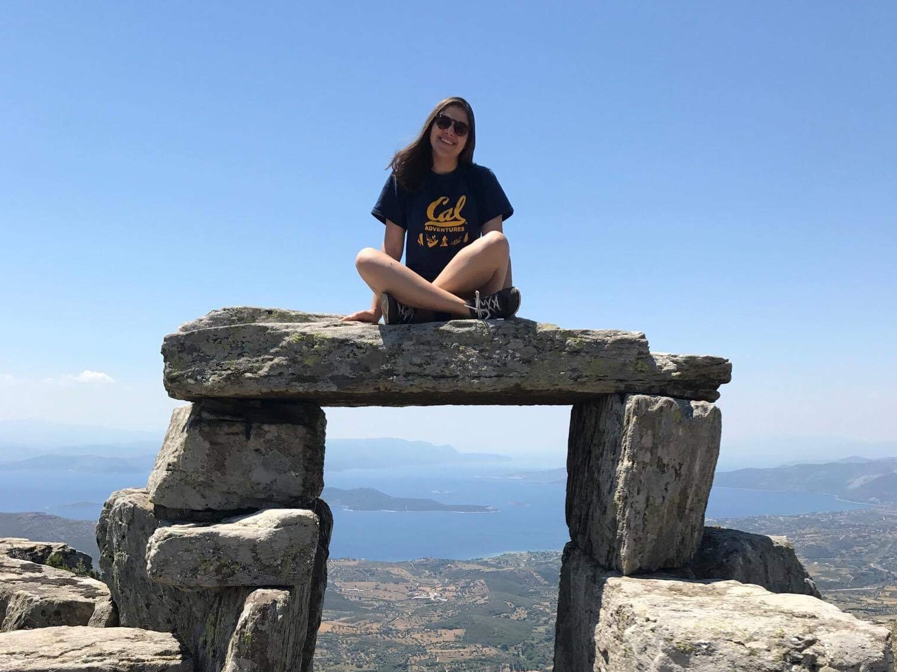
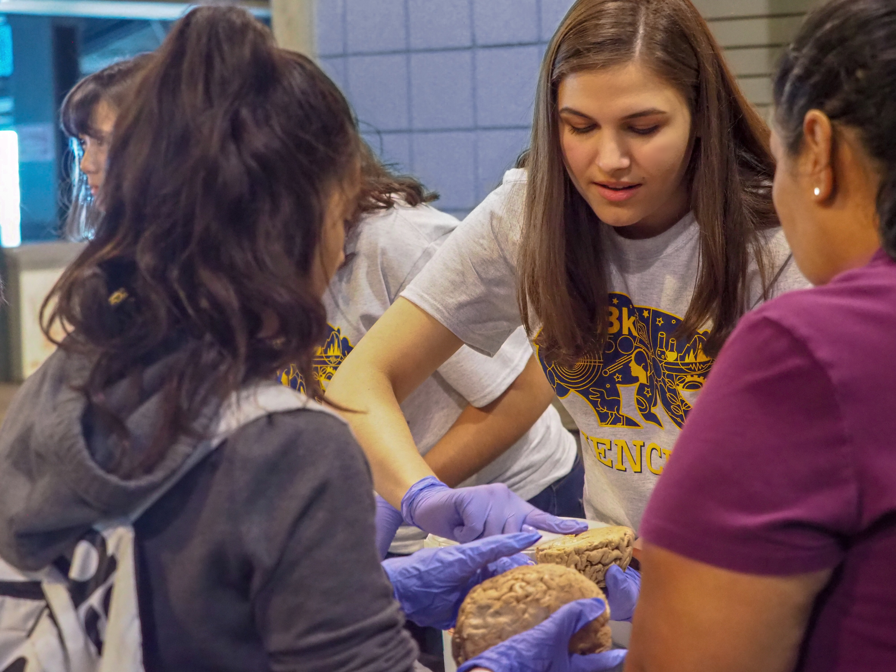
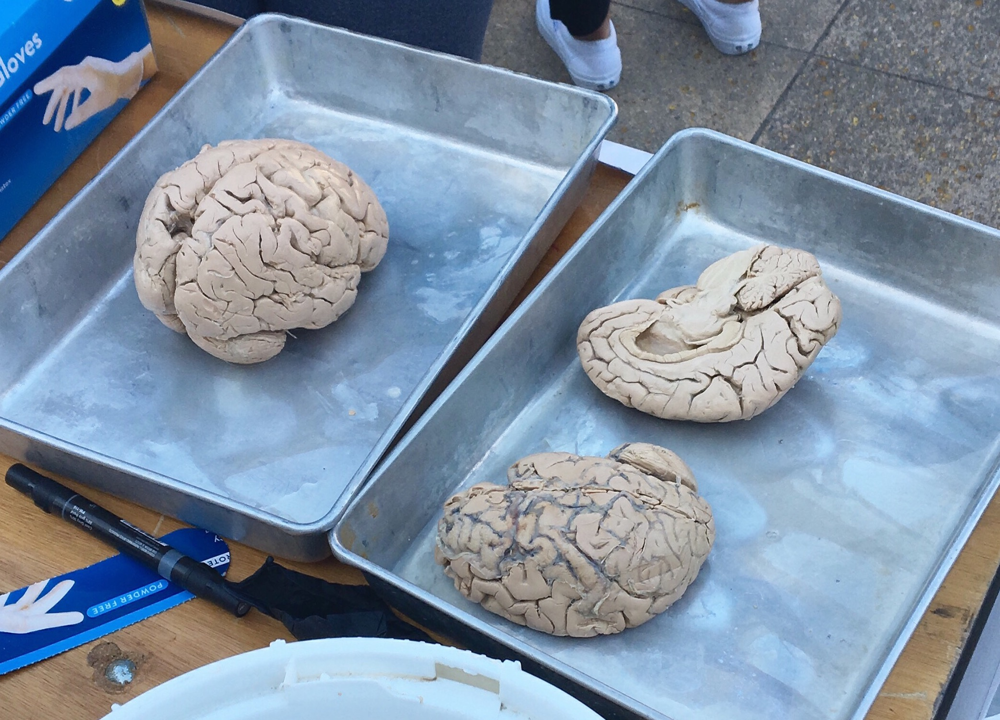
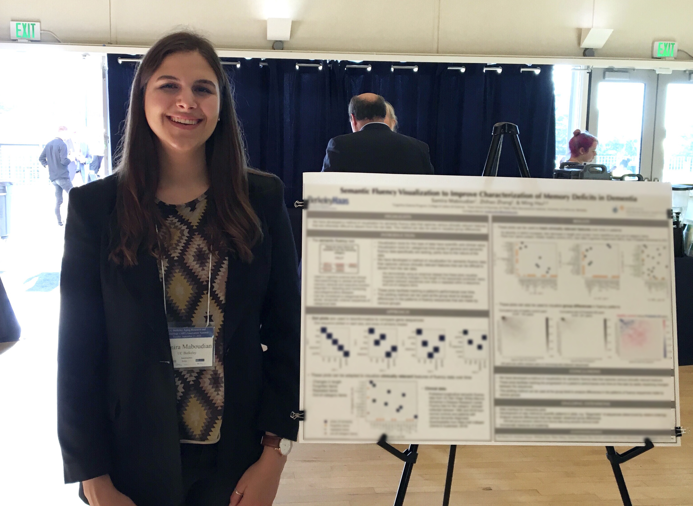
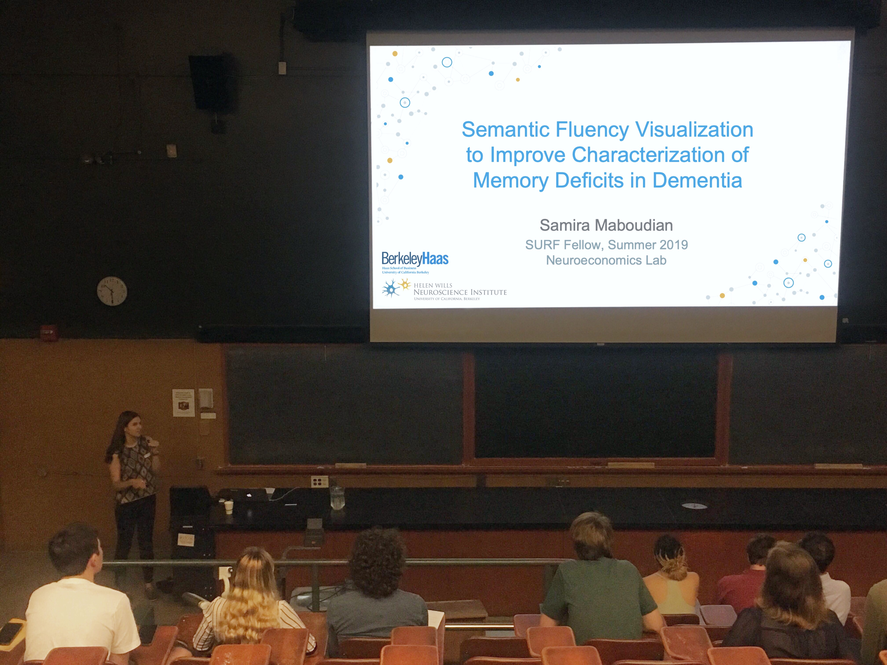
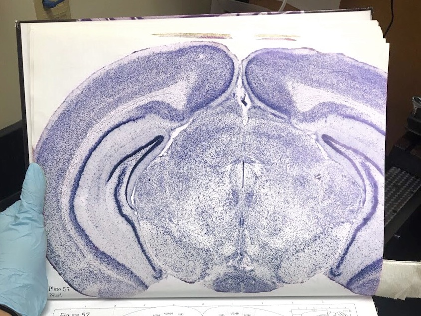

Hi there! I'm Samira, an incoming PhD student in the Helen Wills Neuroscience Institute at UC Berkeley interested in cognition, aging, & decision-making.
Previously, I majored in Cognitive Science and minored in Bioengineering at UC Berkeley. I was a research associate in the Neuroecon Lab, where I worked on several projects focused on aging and decision-making; I completed an honors thesis in the lab in Spring 2020. I also was an Amgen Scholar at Columbia University, where I studied hippocampal circuits in a model of Alzheimer's disease. Outside the lab, I was the President of the Cognitive Science Student Association as well as a participant and organizer of the CS Kickstart program and a CS Scholar.
I enjoy spending my free time baking, reading, and hiking.






UC Berkeley, Helen Wills Neuroscience Institute
Incoming PhD student, Neuroscience (Fall 2020–)
UC Berkeley, College of Letters and Sciences
B.A. Cognitive Science, Bioengineering Minor (May 2020)
UC Berkeley Summer Undergraduate Research Fellow (SURF), L&S Sciences (2019)
Diversity Research Award, Scientific Research Network on Decision Neuroscience and Aging (2019)
Amgen Scholars Fellowship, Columbia University (2018)
The Leadership Award, Cal Alumni Association (2016, 2019)
Neuroecon Lab, UC Berkeley (2018-2020)
Principal investigator: Prof. Ming Hsu
Dranovsky Lab, Columbia University (2018-2020)
Amgen Scholars Fellowship.
Effects of Alzheimer’s Disease and early life stress on hippocampal circuitry in mice
Adesnik Lab, UC Berkeley (2017-2018)
S Maboudian, Z Zhang, & M Hsu. Visualizing Verbal Recall Using Recurrence Plots. Honors thesis; Manuscript in preparation.
S Maboudian, Z Zhang, & M Hsu. Semantic Fluency Visualization to Improve Characterization of Memory Deficits in Dementia. (Poster). 2019 Aging Research and Technology Summit, UC Berkeley.
S Maboudian, J Cardenas, & A Dranovsky. Effects of Alzheimer’s Disease on the Cholinergic Septohippocampal Projection. Report prepared for the Amgen Foundation, 2018.
Semantic Fluency Visualization to Improve Characterization of Memory Deficits in Dementia. Oral Presentation. SURF 2019 Conference, UC Berkeley. 2019.
Septohippocampal Circuit Connectivity in Early Alzheimer’s Disease. Oral Presentation. Cognitive Neuroscience Graduate Colloquium, UC Berkeley. 2018.
Septohippocampal Circuit Connectivity in Early Alzheimer’s Disease. Oral Presentation. Columbia University, Amgen Scholars program. 2018.
Cognitive Science Student Association (CSSA), President (2019-2020); Vice President (2018-2019); Secretary (2017-2018)
CSSA outreach program:
CS Kickstart, participant (2016) and organizer (2017)
Lab Teaching Assistant, Data 8: Foundations of Data Science, UC Berkeley (2017)